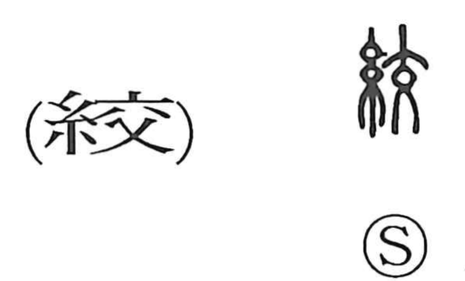

絞

Kun: shiboru, shimeru, shimaru, kubiru | On: kou
to wring ・ to squeeze ・ to tighten ・ to strangle
Explanation
絞 is a phono-semantic character: 糸 supplies the sense of threads and binding, while 交 (kou) acts as the phonetic and, in its old form, depicts a person seen from the front with legs crossed, expressing the idea of crossing. Early lexicography glosses the core meaning as kubiru—throttling the throat—hence compounds such as 絞首 for killing by strangulation and 絞首刑 for that form of punishment. From the notion of crossing and tightening threads it also means shimeru, to tie tight, and in Japanese extends to shiboru, to wring or squeeze, as seen in shiborizome (tie-dyeing by binding cloth with thread), shiborikasu (strained lees or residue), and the figurative chie o shiboru, to wring out one’s wits.